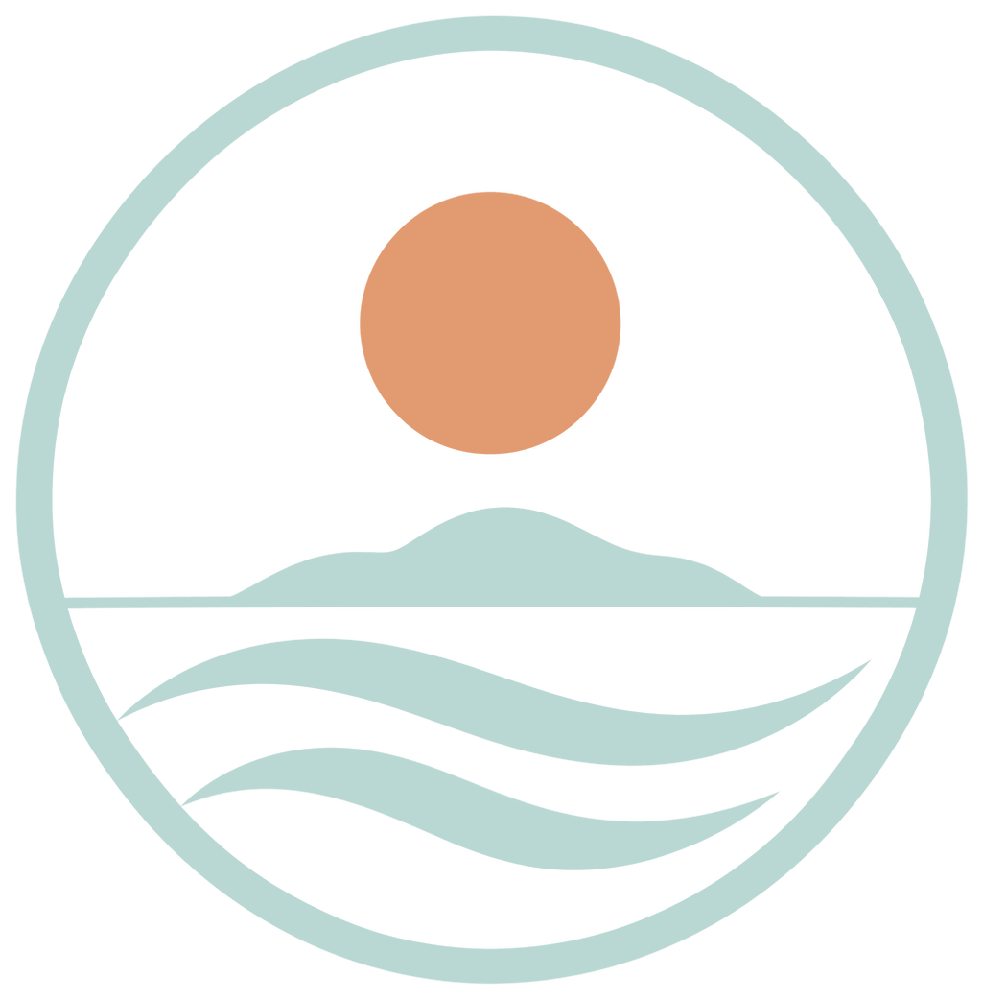
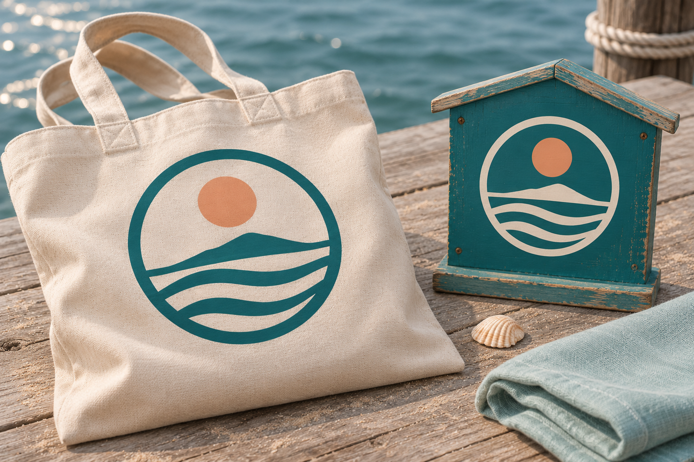
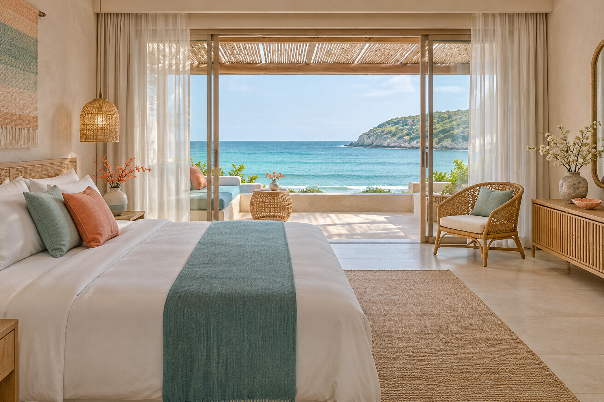
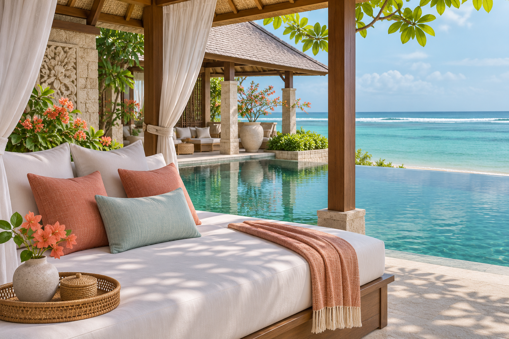

Nusa Tide Escapes
Spesialis liburan pesisir & eksplorasi kepulauan. Bungalow tepi laut, fast boat, dan pelayaran katamaran antar-pulau. — Panduan lengkap identitas merek, sistem logo, palet warna WCAG 2.1 AA, tipografi Fraunces + Manrope, anatomi mesin pencari, dan komponen etalase Ortasys S4.


Posisi Merek & Temuan Riset Desain (Coastal & Island Escape)
Arsitektur visual memprioritaskan kejelasan destinasi dan pencapaian cepat ke mesin pencari di layar pertama.
Pemisahan tegas antara tipografi ekspresif pada tajuk dan tipografi fungsional berangka tabular pada harga & tanggal.
Seluruh token warna diuji terhadap standar kontras WCAG 2.1 AA (minimal 4,5:1 untuk teks dan 3:1 untuk batas komponen UI).
Transparansi harga ritel penuh dalam IDR dengan janji pengecekan harga langsung (live price check).
Master Mark, Varian Latar, Clear Space & Aplikasi Merek
Digunakan pada permukaan terang (#F3F8F6, #FFFFFF) dengan ruang bebas minimal 0,25× tinggi simbol.
Digunakan pada permukaan gelap (#176B73, #10545B) dan bagian footer malam.
Penerapan konsisten pada papan nama, kartu tamu, dan perlengkapan perjalanan.
Token Warna Inti & Derivasi Aksesibilitas
Primary
Primary action, active navigation, key brand anchor
Primary Hover
Hover & pressed state for primary controls
Secondary
Secondary highlights, badges & supporting accents
Tertiary
Warm supporting surfaces & editorial dividers
Accent
Focused emphasis markers & category tags
Background Canvas
Main page canvas & broad section background
Surface
Cards, search console, popovers & modals
Surface Muted
Secondary container contrast & table headers
Text Primary
Headings, body copy & primary data values
Text Muted (Raw)
Metadata, captions & helper descriptions
Border
Hairline card dividers & structural rules
Success
Live price assurance & verified confirmation
Warning
Quota notices & seasonal advisories
Error
Validation alerts & destructive actions
Matriks Verifikasi Kontras WCAG 2.1 AA
Text Primary on Canvas
#20383A on #F3F8F6
Text Primary on Surface
#20383A on #FFFFFF
White on Primary CTA
#FFFFFF on #176B73
Primary on Surface
#176B73 on #FFFFFF
Derived AA Muted on Canvas
#5A6E6D on #F3F8F6
Derived Field Border on Surface
#858F8C on #FFFFFF
Fraunces + Manrope
Aa Bb Cc
Fraunces
Digunakan untuk judul hero, tajuk seksi, dan nama properti utama.
Aa 0123
Manrope
Rp 2.450.000 · 9–12 Nov 2026 · 2 Dewasa (Tabular Numerals aktif).
Skala Sudut & Kontainer
Pola Tata Letak & Komponen Khas Preset 09
Hero Architecture (Archipelago Magazine Split + Interactive Island Hopping Strip):
A breezy coastal hero featuring an interactive **4-Island Visual Hopping Strip** (`Nusa Penida Cliff`, `Gili Meno Coral`, `Kuta Mandalika Bay`, `Nusa Dua Lagoon`) where clicking any island thumbnail immediately filters the stays and populates the search harbor.
Search Engine UI (Split-Deck Harbor & Beachfront Console):
A 2-zone coastal console (`rounded-3xl`): the left deck houses visual mode pills (`Beachfront Stays` vs `Catamaran & Reef Tours`) and island harbor selector, while the right deck houses the tide-date pickers, bungalow steppers, and a warm coral (`#E29A70`) pill trigger.
Inventory Section Layout (Staggered Coastal Lookbook Cards):
Cards alternate vertical offset on desktop (`lg:mt-8` on alternating columns) with tall `aspect-[4/3]` ocean photography, a floating **Shoreline & Boat Access Tag** (*Fast Boat Return Included*, *Direct Coral Reef*, *White Sand Cove*), and a seafoam-tinted price bar.
Manifesto Section (2-Column Maritime & Reef Stewardship Split):
A split coastal panel pairing marine safety & syahbandar boat compliance on the left with coral reef conservation and SNAP BI / DOKU settlement on the right.
Aset Visual Khusus Nusa Tide Escapes (./assets/*.webp)




Pedoman Implementasi Positif
- ✓ Do use authentic coastal photography.
- ✓ Do keep search and property facts easy to scan.
- ✓ Do use teal as the primary interaction color.
- ✓ Do distinguish beachfront, near-beach, and ocean-view claims accurately.
Batasan Kontrak Produk Ortasys S4
- ✕ Don't rely on generic beach gradients or palm-tree silhouettes.
- ✕ Don't invent private access, ocean views, or activity availability.
- ✕ Don't make every section a full-bleed photograph.
- ✕ Don't hide search below lifestyle content.
- ✕ Don't expose supplier net rates or agent-only data.